| Mata Pelajaran | Dasar-Dasar Keahlian Teknik Mesin (Teknik Pemesinan / TP) |
| Fase / Kelas | Fase E / Kelas X SMK (Semester 1 & 2) |
| Penyusun Modul | Bimoro Kusumo, S.Pd. (Mahasiswa PPG Guru Tertentu 2025/2026) |
| Satuan Pendidikan | SMK Negeri 2 Depok Sleman, Daerah Istimewa Yogyakarta |
| Pendekatan Pedagogik | Kurikulum Deep Learning (Mindful, Meaningful, & Joyful Learning) |
Kepala SMK Negeri 2 Depok Sleman
Guru Pengampu / Penyusun Modul
Konstruksi Pembelajaran Bermakna, Berkesadaran & Menggembirakan
Buku ajar digital ini bertumpu pada Pendekatan Deep Learning yang mentransformasi pendidikan vokasi teknik pemesinan dari sekadar hafalan teknis mekanis menjadi pemahaman holistik tingkat tinggi melalui tiga pilar pengalaman belajar:
Berkesadaran (Mindful)
Mindful Learning: Membangun kepekaan penuh terhadap keselamatan kerja, ketelitian pengukuran hingga 0,02 mm, serta disiplin prosedur pencegahan kecelakaan pada mesin berputar.
Bermakna (Meaningful)
Meaningful Learning: Mengaitkan setiap teori bahan, rumus kecepatan potong, toleransi ISO, dan sistem mekanik dengan implementasi nyata pada industri manufaktur kelas dunia.
Menggembirakan (Joyful)
Joyful Learning: Menghadirkan simulasi digital interaktif kanvas, kalkulator putaran spindel bubut dinamis, visualisasi 3D, dan kuis formatif yang menantang dan memotivasi.
Siklus 3 Tahap Deep Learning dalam Setiap Pembelajaran:
Peta Alur Tujuan Pembelajaran (ATP) TP Fase E
Berdasarkan dokumen rujukan resmi CP:ATP.docx Teknik Pemesinan SMK Negeri 2 Depok Sleman, alur kompetensi diorganisasikan ke dalam 6 elemen terpadu:
| Elemen & Semester | Capaian Pembelajaran (CP) Elemen | Alur Tujuan Pembelajaran (ATP) Kunci |
|---|---|---|
| Kecakapan Kerja & K3LH (Semester 1) |
Penerapan praktik kerja aman, bahaya tempat kerja, prosedur darurat, budaya 5R, dan etika kerja teknisi. | Menerapkan K3LH, budaya 5R industri, etika kerja bengkel, dan prosedur darurat APAR. |
| Pengetahuan Bahan (Semester 1) |
Jenis bahan teknik, sifat fisik, kimia, kelistrikan, mampu mekanik, dan fungsi bahan manufaktur. | Mengidentifikasi logam fero/non-fero, polimer, komposit, uji tarik, kekerasan, dan perlakuan panas. |
| Teknik Dasar Produksi (Semester 1) |
Teknologi cutting/non-cutting, metrologi presisi, perkakas tangan, mesin bubut, bor, dan las dasar. | Menggunakan caliper 0,05 mm, mikrometer 0,01 mm, mengoperasikan mesin bor bangku dan mesin bubut. |
| Gambar Teknik Mesin (Semester 2) |
Peralatan gambar, CADD, standardisasi ISO, sketsa, proyeksi piktorial & ortogonal, membaca gambar. | Menggambar proyeksi Eropa vs Amerika, etiket ISO 7200, aturan penunjukan ukuran, toleransi H7/g6. |
| Dasar Sistem Mekanik (Semester 2) |
Jenis sambungan tetap/lepas, tumpuan luncur/gelinding (bushing & bearing), transmisi mesin. | Menganalisis sambungan baut/pasak, dekoder bearing ISO 6205-2RS, rasio roda gigi dan transmisi sabuk. |
| Wawasan Bidang Mesin (Semester 2) |
Perkembangan manufaktur 4.0, IoT, AI predictive maintenance, green skills, technopreneurship. | Memahami otomasi CNC, arsitektur IoT 5-lapis, pemeliharaan berbasis AI, dan peluang usaha bengkel. |
1.1 Etika Kerja & Disiplin Industri Pemesinan Manufaktur
Tahap Memahami (Understand): Di bengkel pemesinan presisi, etos kerja profesional adalah fondasi keselamatan dan kualitas. Sikap sembrono 1 detik di dekat mesin berputar dapat mengakibatkan fatalitas fisik seumur hidup:
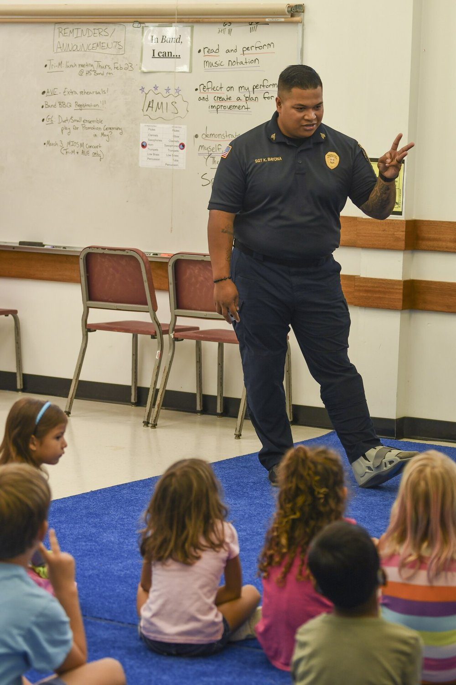
Briefing Keselamatan (Tool Box Meeting)
Pengarahan 5 menit sebelum praktik kerja untuk memeriksa kesiapan fisik, APD, dan SOP pengerjaan mesin.

Komitmen Nol Kecelakaan (Zero Accident)
Sikap mental menolak kompromi keselamatan demi mengejar kecepatan produksi yang ceroboh.
Tiga Nilai Etika Kunci Teknisi Pemesinan Profesional:
Integritas Ukuran Presisi
Jujur dalam mengukur dan mencatat toleransi benda kerja. Tidak memanipulasi hasil inspeksi demi lolos uji.
Tanggung Jawab Pemeliharaan Alat
Selalu membersihkan meja mesin dari beram tatal logam dan melumasi komponen eretan sebelum meninggalkan bengkel.
Komunikasi Tim & Saling Mengingatkan
Berani mengingatkan rekan kerja yang lalai memakai kacamata pengaman atau melanggar SOP mesin berputar.
1.2 Regulasi K3LH & Hierarki Pengendalian Bahaya Industri
Tahap Memahami (Understand): Keselamatan dan Kesehatan Kerja serta Lingkungan Hidup (K3LH) di Indonesia dijamin oleh Undang-Undang No. 1 Tahun 1970 tentang Keselamatan Kerja dan standar internasional ISO 45001:2018:
5 Tingkat Hierarki Pengendalian Risiko
Urutan prioritas mitigasi: Eliminasi, Substitusi, Rekayasa Teknik, Kontrol Administratif, dan APD.
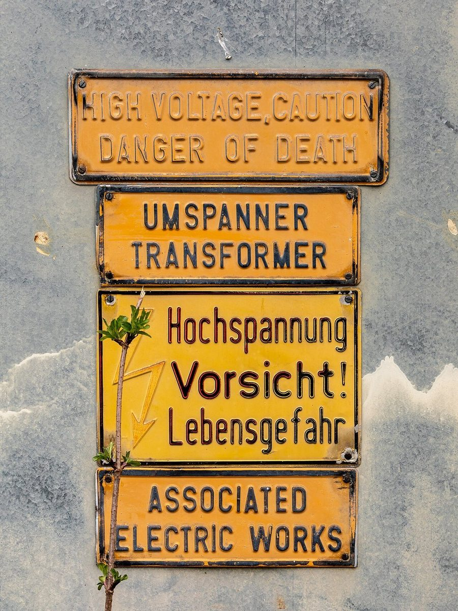
Analisis Keselamatan Kerja (JSA)
Mengidentifikasi potensi bahaya di setiap langkah kerja pemesinan sebelum mesin dihidupkan.
Penerapan Hierarki Pengendalian di Bengkel Pemesinan:
1.3 Standar APD Bengkel & Aturan Khusus Mesin Berputar
Tahap Mengaplikasikan (Apply): Klik tombol APD di bawah ini untuk menginspeksi fungsi perlindungan dan potensi bahaya yang dicegah di bengkel mesin perkakas:
Kacamata Pengaman (Safety Glasses / Goggles)
Melindungi mata dari serpihan tatal/beram logam panas yang terlempar dengan kecepatan tinggi saat membubut, memfrais, dan mengebor.
1.4 Bahaya Fisik, Mekanis & Penanganan Beram (Tatal) Logam
Tahap Memahami (Understand): Tatal logam hasil pemotongan (*chips/swarf*) memiliki tepi setajam silet dan bersuhu tinggi (200°C s.d. 400°C) akibat gesekan pemotongan:
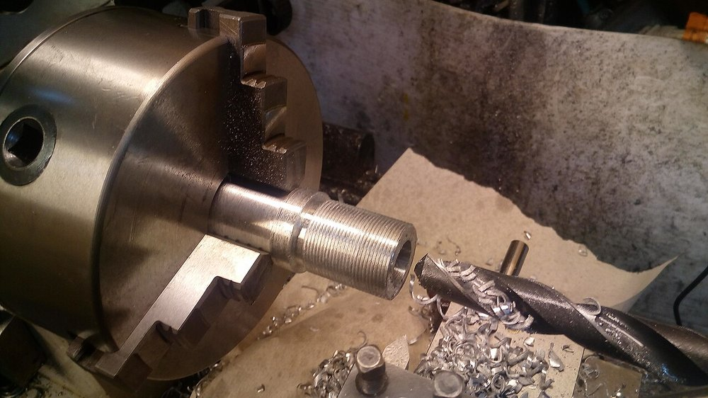
Mekanisme Pembentukan Tatal
Tatal spiral kontinu yang melilit benda kerja rawan menyabet tangan operator bila tidak diputuskan dengan pemutus tatal (chip breaker).
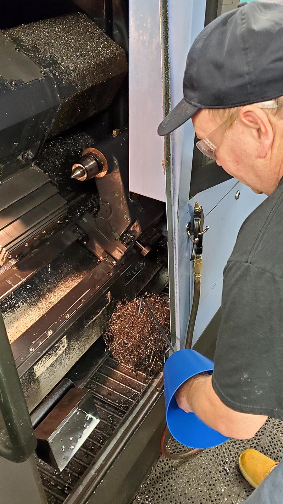
Pengait Tatal Khusus (Chip Hook)
Wajib menggunakan tongkat pengait kawat atau kuas untuk menarik beram. DILARANG MENARIK DENGAN TANGAN TELANJANG!
Empat Sumber Bahaya Mekanis Utama Mesin Perkakas:
- Titik Jepit Cekam (Rotating Chuck Nip Points): Rahang cekam 3-jaw atau 4-jaw yang menonjol dapat menyambar lengan baju yang longgar atau rambut terurai.
- Lontaran Benda Kerja (Workpiece Ejection): Benda kerja yang tidak dicekam kuat atau kunci cekam yang tertinggal akan terlontar seperti peluru berkecepatan tinggi saat motor mesin dinyalakan.
- Gesekan & Suhu Panas Ekstrem: Tatal baja yang baru terpotong dapat membakar kulit dan pakaian kerja katun bila tidak dilengkapi perisai chip guard.
- Bahaya Sengatan Listrik & Kebocoran Grounding: Motor penggerak mesin perkakas bertenaga 3-fase 380V wajib memiliki pentanahan (grounding) sempurna dengan tahanan < 5 Ohm.
1.5 Prosedur Tanggap Darurat, P3K & Teknik Pemadaman Api PASS
Tahap Mengaplikasikan (Apply): Kesiapsiagaan menghadapi kebakaran akibat korsleting listrik panel kontrol atau percikan gerinda di dekat bahan mudah terbakar:
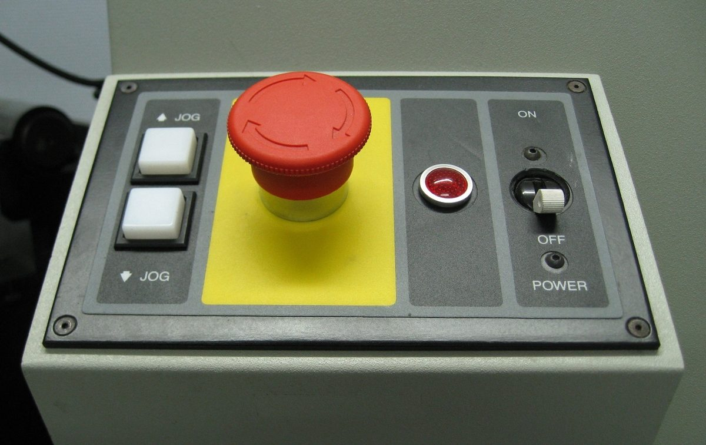
Tombol Emergency Stop Jamur Merah
Segera tekan tombol jamur merah untuk memutus suplai listrik seketika saat terjadi kecelakaan atau suara gemeretak abnormal.
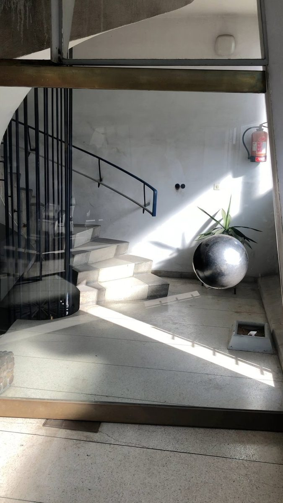
Alat Pemadam Api Ringan (APAR Powder/CO2)
Gunakan APAR tipe CO₂ atau Dry Chemical Powder untuk kebakaran panel listrik mesin manufaktur (Kelas C).
Teknik Operasi Pemadaman Api Menggunakan APAR (PASS):
1.6 Budaya Kerja Industri 5R / 5S & Kaizen Bengkel Pemesinan
Tahap Mengaplikasikan (Apply): Budaya 5R (Seiri, Seiton, Seiso, Seiketsu, Shitsuke) meniadakan pemborosan waktu pencarian alat dan menciptakan bengkel kelas dunia:
Ringkas (Seiri) - Pemilahan Nyata Bengkel Mesin
Pilah tatal logam (scrap/beram) bekas pemakanan ke dalam bak penampung chip. Singkirkan pahat yang patah atau aus ke kotak perbaikan.
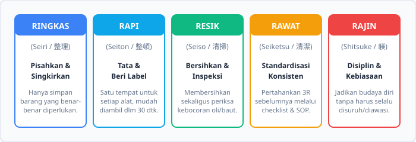
Prinsip 5R di Bengkel SMK N 2 Depok
Standarisasi papan bayangan perkakas (shadow board) dan garis pembatas kuning-hitam di lantai mesin.
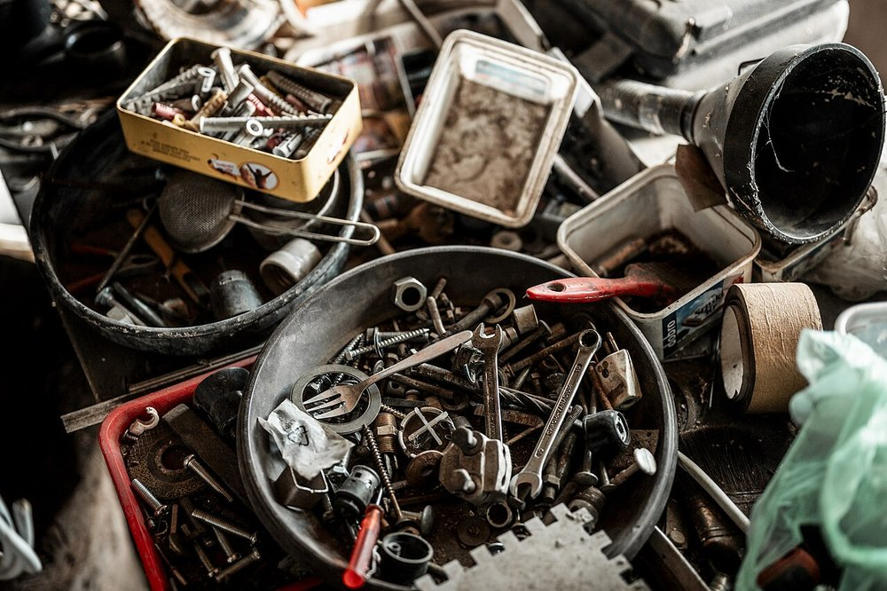
Shadow Board Kunci & Pahat
Kunci cekam dan pahat bubut memiliki slot khusus bertanda visual sehingga kehilangan alat terdeteksi dalam 3 detik.
Rangkuman Pembelajaran Bab 1 (Deep Reflection)
- Etos kerja profesional dibangun di atas komitmen nol kecelakaan (Zero Accident) dan kepatuhan penuh terhadap SOP mesin.
- Hierarki pengendalian bahaya menempatkan Eliminasi dan Rekayasa Teknik di atas APD sebagai solusi mitigasi paling mendasar.
- Aturan keselamatan mutlak mesin berputar: Dilarang keras memakai sarung tangan, pakaian kerja longgar, atau aksesoris perhiasan.
- Penanganan tatal beram logam wajib menggunakan tongkat pengait atau kuas pelindung untuk menghindari sayatan tangan.
- Kesiapsiagaan darurat mencakup pengetahuan lokasi tombol Emergency Stop dan teknik pemadaman api PASS pada APAR.
- Budaya 5R (Ringkas, Rapi, Resik, Rawat, Rajin) meningkatkan efisiensi kerja dan meniadakan bahaya tersandung di bengkel.
🎯 Evaluasi Deep Learning: Kuis Formatif Bab 1
Kuis Interaktif2.1 Klasifikasi Bahan Teknik Manufaktur Mesin
Tahap Memahami (Understand): Pemilihan bahan baku dalam manufaktur mesin menentukan keawetan komponen, kemudahan proses pemotongan (machinability), dan biaya produksi:
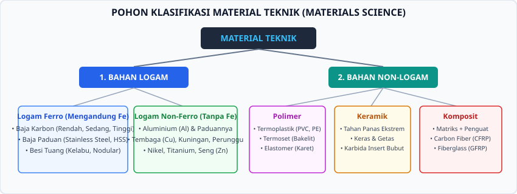
Pohon Silsilah Material Teknik
Pembagian 4 kelompok besar: Logam (Ferro & Non-Ferro), Polimer, Keramik Teknik, dan Material Komposit.
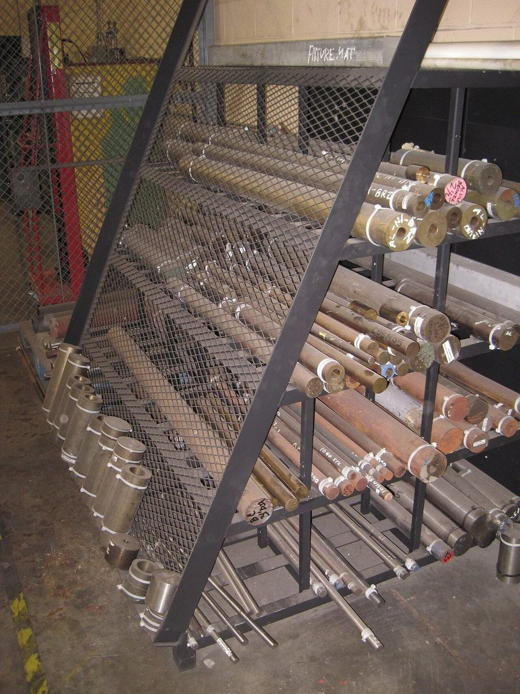
Material Baja Karbon & Paduan
Baja konstruksi St 37, baja perkakas karbon tinggi, besi tuang kelabu FC250, dan paduan aluminium ringan.
Karakteristik 4 Kelompok Material Manufaktur:
Logam Ferro (Ferrous Metals)
Paduan berbahan dasar besi (Fe) dan karbon (C): Baja karbon rendah (St 37), baja karbon sedang (S45C poros roda gigi), dan besi tuang kelabu (badan mesin bubut penahan getaran).
Logam Non-Ferro
Bebas kandungan besi: Paduan aluminium (Al 6061 ringan anti karat), tembaga (Cu penghantar listrik kabel), dan kuningan (brass tahan gesekan bantalan).
Material Polimer (Plastik Teknik)
Termoplastik (Nylon/Poliamida roda gigi hening, Teflon tahan panas) dan Termoset (Bakelit isolator listrik switchboard mesin).
Komposit & Keramik Teknik
Keramik mata pahat sisipan karbida (insert tungsten carbide) tahan suhu potong 1000°C dan komposit serat karbon (CFRP).
2.2 Sifat Fisik Bahan: Titik Lebur, Massa Jenis & Pemuaian Termal
Tahap Memahami (Understand): Sifat fisik adalah karakteristik bahan yang dapat diamati tanpa mengubah komposisi kimia zat tersebut:
| Material Logam | Massa Jenis (g/cm³) | Titik Lebur (°C) | Koefisien Muai Panjang (×10⁻⁶ /°C) | Aplikasi Khas di Industri |
|---|---|---|---|---|
| Baja Karbon (St 37 / S45C) | 7,85 | 1.450 – 1.520 | 11,5 | Poros transmisi, roda gigi mesin, rangka meja bubut. |
| Aluminium (Al 99,5 / 6061) | 2,70 (Sangat Ringan) | 660 | 23,0 (Muai 2x Baja) | Komponen dirgantara, casing motor, puli transmisi. |
| Tembaga (Copper Cu) | 8,96 | 1.083 | 16,5 | Kabel lilitan motor listrik, elektroda EDM, pipa pendingin. |
| Besi Tuang Kelabu (FC 250) | 7,20 | 1.150 – 1.250 | 10,5 | Meja mesin bubut (lathe bed) karena mampu meredam getaran. |
Dampak Pemuaian Termal pada Ketelitian Ukuran Pembubutan:
Saat pembubutan kasar tanpa cairan pendingin (coolant), suhu benda kerja baja dapat meningkat hingga 80°C di atas suhu ruang (ΔT = 60°C).
Rumus pertambahan panjang/diameter benda kerja:
ΔL = L₀ × α × ΔT
Jika benda kerja berdiameter 50 mm diukur saat masih panas membara, ukurannya akan memuai sebesar 50 × (11,5 × 10⁻⁶) × 60 ≈ +0,035 mm.
2.3 Sifat Kimia Bahan & 4 Metode Proteksi Permukaan Logam
Tahap Memahami & Mengaplikasikan (Understand & Apply): Korosi elektrokimia adalah degradasi logam akibat reaksi redoks dengan lingkungan basah/oksigen yang merugikan industri manufaktur hingga triliunan rupiah setiap tahun:
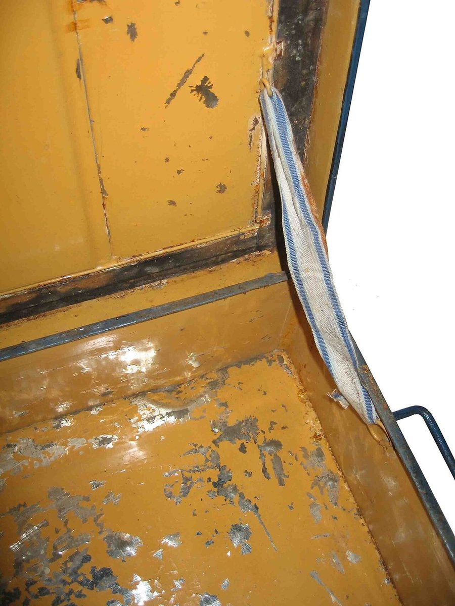
Mekanisme Pembentukan Karat (Fe₂O₃)
Besi melepaskan elektron di anoda dan bereaksi dengan ion hidroksil air membentuk karat rapuh.
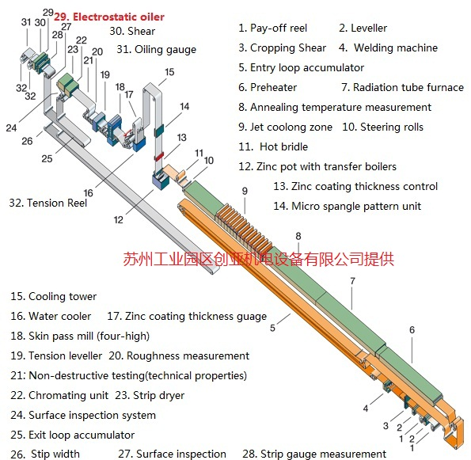
Proteksi Pelapisan Permukaan
Pemberian penghalang fisik dan anoda korban untuk menghentikan kontak langsung dengan elektrolit.
Empat Metode Pengendalian Korosi Komponen Mesin:
2.4 Sifat Mampu Listrik: Konduktor, Semikonduktor & Isolator Mesin
Tahap Memahami (Understand): Mesin manufaktur modern digerakkan oleh motor listrik 3-fase dan dikendalikan oleh modul semikonduktor inverter CNC yang membutuhkan pemilihan bahan kelistrikan presisi:
Konduktor Listrik Unggul
Tembaga Elektrolitik (Cu 99,9%): Memiliki resistivitas sangat rendah (1,68 × 10⁻⁸ Ω·m). Digunakan untuk lilitan kawat dinamo motor spindel mesin bubut dan transformator mesin las.
Isolator Tegangan Tinggi
Polimer Bakelit & Keramik Steatit: Resistivitas sangat tinggi (> 10¹² Ω·m). Digunakan pada saklar panel listrik 380V, pembungkus kabel las, dan penyangga rel terminal listrik.
Semikonduktor Otomasi Mesin
Silikon (Si) & Silikon Karbida (SiC): Digunakan pada modul daya IGBT Inverter, mikroprosesor pengendali sumbu motor servo mesin bubut CNC, dan sensor optik proximity.
Sifat Kemagnetan Logam (Feromagnetik)
Baja dan besi mampu menarik fluks magnetik kuat, memungkinkan penggunaan Magnetic Chuck untuk menjepit pelat tipis saat penggerindaan permukaan datar (surface grinding).
2.5 Sifat Mampu Mekanik: Kekuatan, Kekerasan, Keuletan & Ketangguhan
Tahap Memahami (Understand): Sifat mekanik menentukan respon material saat menerima pembebanan gaya luar tarik, tekan, puntir, atau tumbukan:
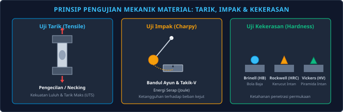
Uji Tarik, Tekan & Impak
Pemberian gaya aksial terukur untuk mengetahui batas luluh (yield) dan kekuatan patah maksimum (tensile strength).
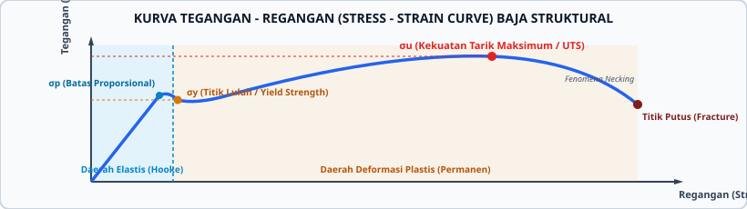
Kurva Tegangan-Regangan (Stress-Strain)
Transisi dari daerah deformasi elastis (hukum Hooke) menuju daerah deformasi plastis permanen hingga putus.
Enam Parameter Sifat Mekanik Utama Komponen Mesin:
Kekuatan Tarik (Tensile Strength)
Tegangan maksimum yang mampu ditahan sebelum material mengalami pengecilan penampang (necking) dan putus.
Batas Luluh (Yield Strength)
Titik kritis di mana material berhenti berdeformasi elastis dan mulai berubah bentuk permanen plastis.
Kekerasan (Hardness)
Ketahanan terhadap deformasi plastis lokal berupa goresan dan penetrasi indentor uji Brinell atau Rockwell C.
Keuletan (Ductility)
Kemampuan meregang membentuk kawat atau lembaran tipis tanpa retak (dinyatakan dalam % pertambahan panjang Elongation).
2.6 Metode Uji Mekanik & Perlakuan Panas Logam (Heat Treatment)
Tahap Mengaplikasikan (Apply): Sifat mekanik baja karbon dapat dimodifikasi melalui siklus pemanasan dan laju pendinginan teratur:
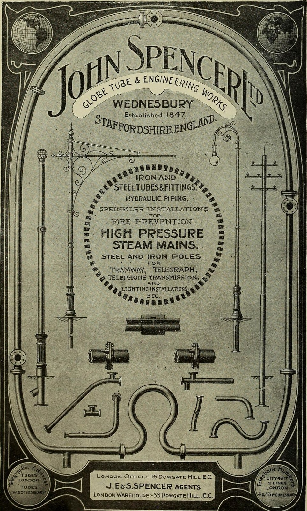
Siklus Perlakuan Panas (Heat Treatment)
Pemanasan austenisasi 850°C, penahanan waktu (soaking), pencelupan cepat (quenching), dan penemperan (tempering).
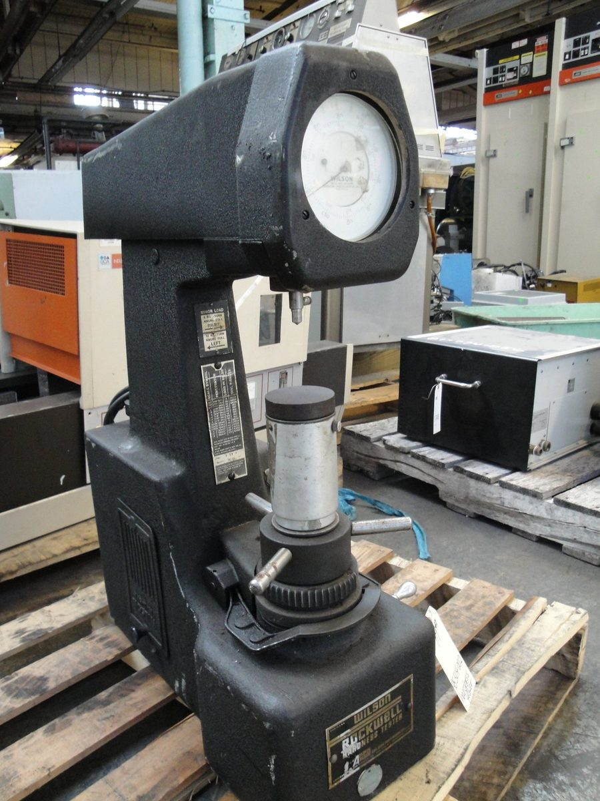
Uji Kekerasan Rockwell HRC
Indentor kerucut intan ditekan beban 150 kgf untuk menguji kekerasan mata pahat HSS (HRC 62–65).
Empat Macam Proses Perlakuan Panas Baku di Industri:
| Nama Proses | Metode Pendinginan | Tujuan & Perubahan Sifat Mekanik |
|---|---|---|
| Pengerasan (Hardening / Quenching) | Celup cepat ke dalam air garam atau oli pendingin. | Membentuk struktur kristal martensit yang sangat keras dan tahan aus untuk pisau potong dan roda gigi. |
| Penemperan (Tempering) | Dipanaskan ulang 200°C–500°C lalu didinginkan di udara. | Menghilangkan kerapuhan (brittleness) pasca-quenching sehingga diperoleh kombinasi keras dan tangguh. |
| Pelunakan (Annealing) | Didinginkan sangat lambat di dalam tungku oven tertutup. | Melunakkan struktur kristal logam agar mudah dikerjakan dengan mesin bubut (machinability tinggi). |
| Penormalan (Normalizing) | Didinginkan secara bebas di udara terbuka bengkel. | Menyeragamkan butiran kristal dan menghilangkan tegangan sisa akibat pengelasan atau penempaan. |
Rangkuman Pembelajaran Bab 2 (Refleksi Ilmu Bahan)
- Material teknik terbagi atas logam fero (baja St37, S45C, besi tuang), logam non-fero (aluminium, tembaga, kuningan), polimer, keramik, dan komposit.
- Pemuaian termal saat pemesinan panas wajib diperhitungkan agar pengukuran tidak menyimpang dari toleransi ISO standar 20°C.
- Proteksi korosi elektrokimia dilakukan dengan pelapisan minyak pelindung, galvanisasi seng, hard chrome plating, dan anodisasi aluminium.
- Sifat mampu listrik menempatkan tembaga murni sebagai konduktor dinamo motor mesin, sedangkan polimer dan keramik sebagai isolator keselamatan.
- Uji tarik menghasilkan kurva tegangan-regangan yang memperlihatkan batas elastis, batas luluh, dan kekuatan tarik maksimum.
- Proses perlakuan panas (quenching dan tempering) memodifikasi struktur mikro baja untuk menghasilkan kekuatan dan ketahanan aus yang optimal.
🎯 Evaluasi Deep Learning: Kuis Formatif Bab 2
Kuis Interaktif3.1 Klasifikasi Proses Manufaktur: Cutting vs Non-Cutting
Tahap Memahami (Understand): Manufaktur modern mengelompokkan pembuatan komponen mesin menjadi dua cabang teknologi utama:
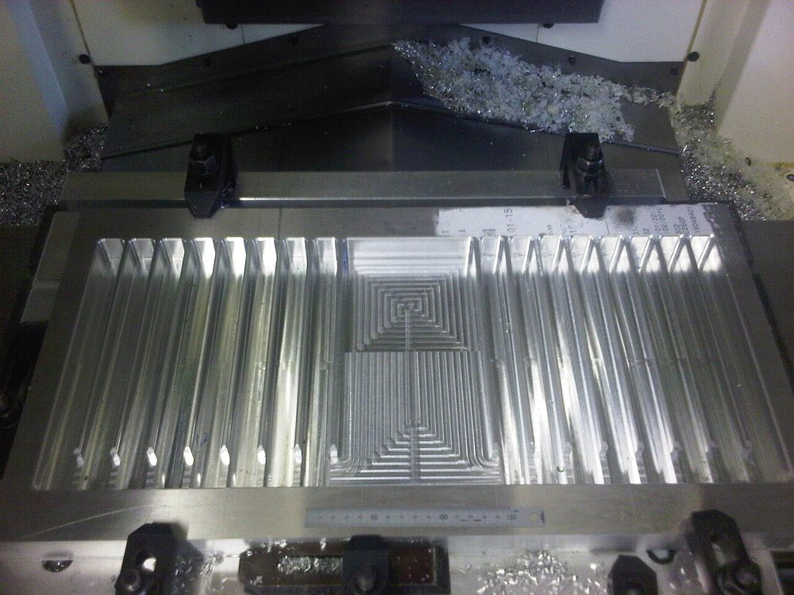
Proses Pemotongan (Cutting Process)
Pengurangan volume material menghasilkan tatal (chips): Pembubutan, pemfraisan, pengeboran, penyerutan, dan penggerindaan presisi.
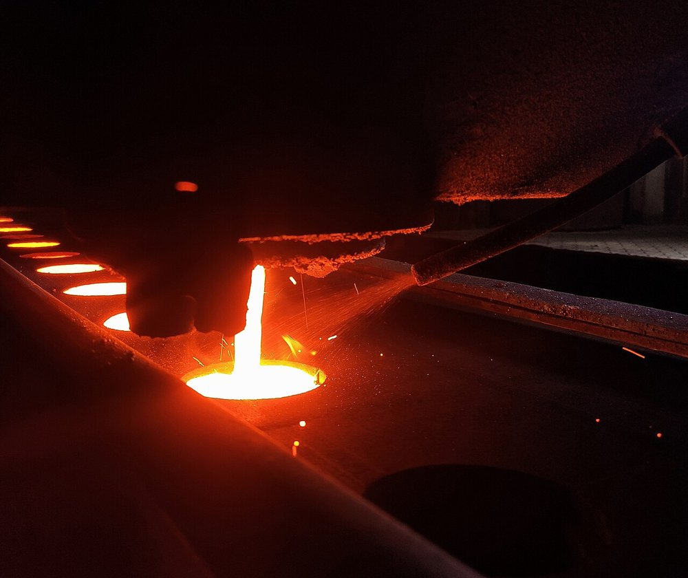
Proses Tanpa Pemotongan (Non-Cutting)
Pembentukan bentuk tanpa membuang beram: Pengecoran logam cair (casting), penempaan (forging), penekukan (bending), dan pengelasan dasar.
Perbandingan Karakteristik Kedua Teknologi:
| Aspek Perbandingan | Teknologi Cutting (Pemesinan) | Teknologi Non-Cutting (Pembentukan & Cetak) |
|---|---|---|
| Tingkat Ketelitian Dimensi | Sangat tinggi (toleransi mikron hingga ±0,01 mm). | Sedang hingga kasar (±0,5 mm s.d. ±2,0 mm). |
| Kekasaran Permukaan (Ra) | Sangat halus (Ra 0,8 s.d. 3,2 µm). | Cenderung kasar (Ra 6,3 s.d. 25 µm), butuh finishing lanjut. |
| Efisiensi Bahan Baku | Ada sisa tatal terbuang (scrap beram 10%–40%). | Tinggi (hampir 100% material termanfaatkan mendekati bentuk jadi / net-shape). |
| Aplikasi Komponen | Poros pasak bearing, ulir baut presisi, roda gigi. | Blok silinder mesin, velg mobil cetak, rangka bejana tekan. |
3.2 Metrologi Industri & Klasifikasi Alat Ukur Pemesinan
Tahap Memahami (Understand): Metrologi industri adalah sains pengukuran dimensi geometris untuk memastikan ketercukupan suaian rakitan antar-komponen mesin:
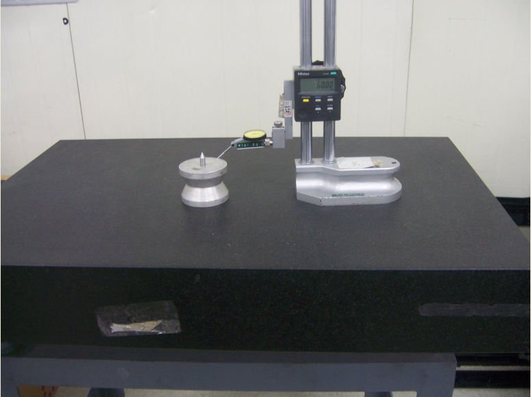
Klasifikasi Alat Ukur Metrologi
Alat ukur langsung berskala (caliper, micrometer) dan alat pembanding tanpa skala (dial indicator, hairline, gauge block).
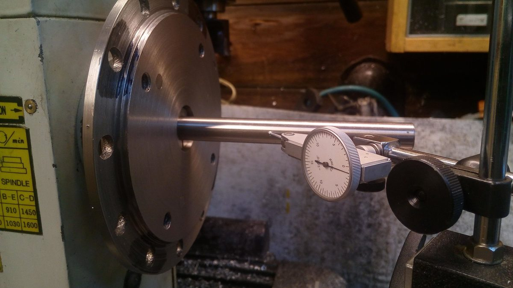
Jam Ukur (Dial Indicator)
Ketelitian 0,01 mm untuk menguji kebulatan (run-out) poros bubut dan kelurusan gerakan meja mesin frais.
Hierarki Ketelitian Alat Ukur Dimensi Panjang:
Mistar Baja (Steel Rule)
Ketelitian: 0,5 mm. Digunakan untuk pengukuran panjang awal balok kasar dan pemotongan bahan mentah.
Jangka Sorong (Vernier Caliper)
Ketelitian: 0,05 mm & 0,02 mm. Multifungsi mengukur dimensi luar, lubang dalam, dan kedalaman ceruk.
Mikrometer Luar (Outside Micrometer)
Ketelitian: 0,01 mm. Khusus untuk diameter dudukan bearing dan toleransi suaian poros ISO grade 6.
Blok Ukur Presisi (Gauge Block)
Ketelitian: 0,001 mm (1 mikron). Standar acuan sekunder bengkel untuk mengalibrasi jangka sorong dan mikrometer.
3.3 Jangka Sorong (Vernier Caliper) Ketelitian 0,05 mm & 0,02 mm
Tahap Memahami (Understand): Jangka sorong adalah instrumen pengukuran serbaguna yang mampu melakukan 3 macam pengukuran: luar, dalam, dan kedalaman:
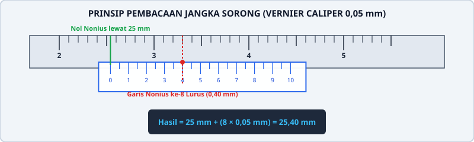
Prinsip Pembacaan Nonius
Selisih 1 strip skala utama (1 mm) dengan 1 strip skala nonius 20 bagian (0,95 mm) menghasilkan resolusi 0,05 mm.

Bagian-Bagian Jangka Sorong
Rahang tetap, rahang geser, pengukur lubang dalam, bilah pengukur kedalaman, dan baut pengunci posisi.
Langkah Matematis Menghitung Hasil Pengukuran:
Hasil Ukur = Nilai Skala Utama (mm) + (Garis Nonius Segaris × 0,05 mm)
3.4 Laboratorium Virtual: Simulator Jangka Sorong 0,05 mm
Tahap Mengaplikasikan (Apply): Geser slider rahang jangka sorong di bawah ini untuk melihat pergeseran skala nonius 0,05 mm secara langsung pada kanvas presisi:
🔬 Simulator Vernier Caliper 0.05 mm
Presisi Kanvas 2DInstruktur meminta Anda mengukur diameter poros bertingkat sebesar 28,65 mm. Geser slider hingga angka tersebut tercapai dan ketikkan tebakan Anda:
3.5 Mikrometer Luar (0,01 mm) & Kalibrasi Titik Nol (Zero Adjustment)
Tahap Memahami & Mengaplikasikan (Understand & Apply): Mikrometer luar memanfaatkan prinsip ulir presisi dengan kisar (pitch) 0,5 mm untuk mengukur diameter dudukan bantalan poros bubut:

Anatomi Mikrometer Luar 0–25 mm
Landasan tetap (anvil), poros geser (spindle), silinder tetap (sleeve), tabung putar (thimble), dan raset (ratchet stop).
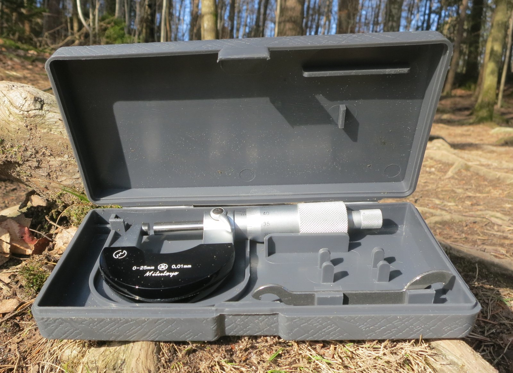
Penyetelan Titik Nol dengan Kunci C
Garis nol silinder tetap harus lurus sempurna dengan garis nol tabung putar saat anvil dan spindle bersentuhan.
Kaidah Baku Penggunaan Mikrometer:
- Gunakan Gigi Gelincir (Ratchet Stop): Saat spindle mendekati benda kerja, hentikan memutar thimble dan putar raset perlahan hingga berbunyi 'klik' 2 s.d. 3 kali untuk menjamin tekanan pengukuran konstan.
- Kunci Tuas Pengunci (Lock Nut): Kunci poros spindle sebelum membaca skala agar ukuran tidak bergeser saat mikrometer diangkat dari benda kerja.
- Pembersihan Bidang Kontak: Selalu jepit selembar kertas bersih di antara anvil dan spindle lalu tarik perlahan untuk membersihkan lapisan debu mikro sebelum pengukuran.
Hasil = Skala Laras Tetap (mm & 0,5 mm) + (Garis Tabung Putar × 0,01 mm)
3.6 Perkakas Tangan Manual (Hand Tools) & Kerja Bangku Pemesinan
Tahap Memahami & Mengaplikasikan (Understand & Apply): Keterampilan kerja bangku manual membentuk kepekaan rasa (feeling) dan ketelitian tangan calon teknisi mesin:
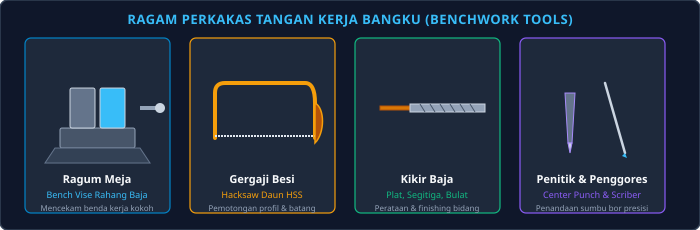
Keluarga Perkakas Tangan Manual
Ragum bangku meja, kikir baja (pelat, setengah bulat, bulat, segitiga), gergaji besi (hacksaw), pahat tangan, dan tap-snei.
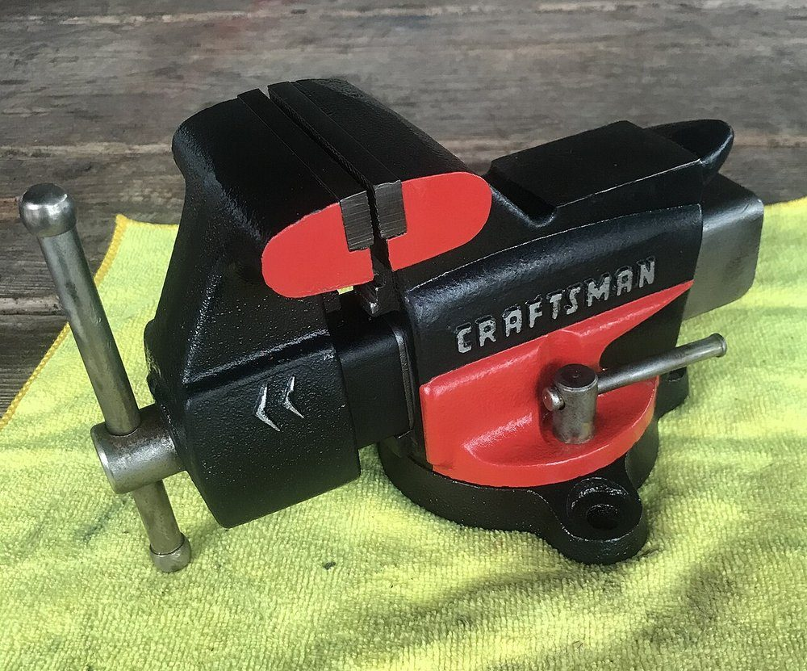
Teknik Mengikir Silang (Cross Filing)
Gerakan kikir membentuk sudut diagonal 45° saling menyilang untuk menghasilkan permukaan bidang rata tanpa cekungan.
Pembuatan Ulir Manual Menggunakan Tap & Snei:
Tap Ulir Dalam (Hand Tap Set)
1 set terdiri dari 3 tap: Tap 1 (Taper / tirus awal), Tap 2 (Plug / pembentuk), dan Tap 3 (Bottoming / perata dasar lubang buntu). Putaran maju 1 putaran, mundur 1/2 putaran untuk memutus tatal.
Snei Ulir Luar (Threading Die)
Mata pembuat ulir luar pada poros silindris. Ujung poros wajib di-chamfer 45° terlebih dahulu agar snei dapat mencengkeram tegak lurus sumbu poros.
3.7 Perkakas Bertenaga: Mesin Gerinda Tangan & Mesin Bor Bangku
Tahap Memahami & Mengaplikasikan (Understand & Apply): Pembuatan lubang presisi dan pemotongan profil baja menggunakan mesin stasioner bertenaga:
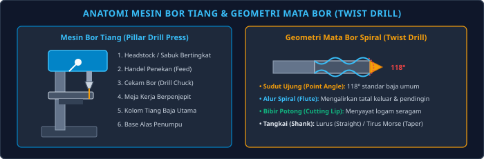
Geometri Mata Bor Pilin (Twist Drill)
Sudut puncak standar 118° untuk baja lunak, sudut heliks alur tatal, dan bibir potong simetris sama panjang.
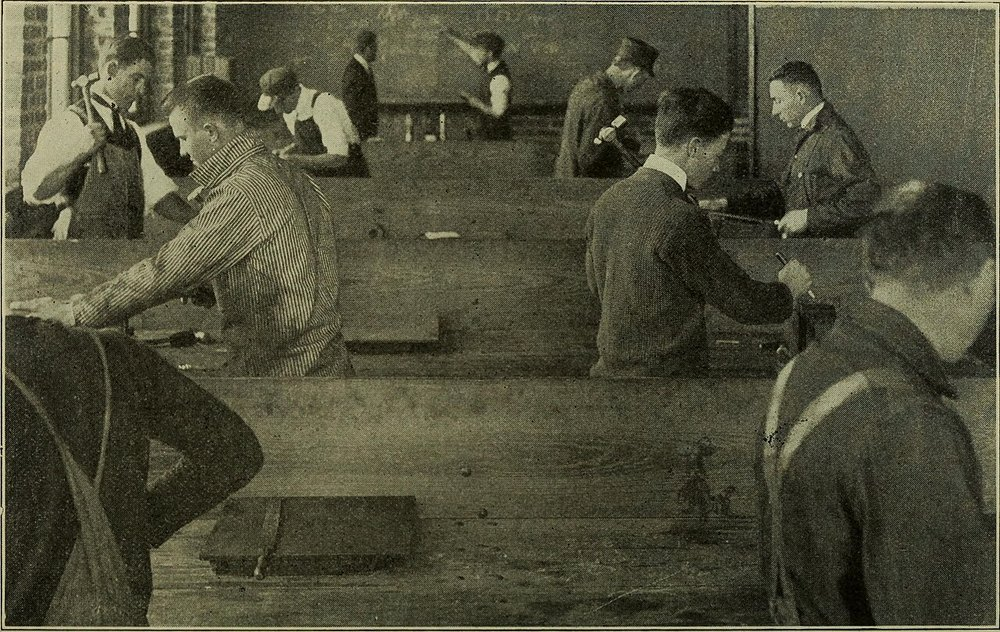
Pencekaman Ragum Mesin Bor
Benda kerja WAJIB dibaut kuat pada meja mesin bor. Dilarang memegang pelat dengan tangan saat mengebor!
Kalkulasi Kecepatan Putaran Spindel Bor (RPM):
n = (1000 × Cs) / (π × d)
Di mana Cs adalah kecepatan potong material (m/menit) dan d adalah diameter mata bor (mm).
Contoh: Mata bor Ø 8 mm pada baja St 37 (Cs = 25 m/menit):
n = (1000 × 25) / (3,14 × 8) = 25.000 / 25,12 ≈ 995 RPM (pilih tingkat puli terdekat ~1000 RPM).
3.8 Anatomi Mesin Bubut Standar & Operasi Pembubutan Dasar
Tahap Memahami (Understand): Mesin bubut (*Center Lathe Machine*) adalah mesin perkakas induk manufaktur yang memutar benda kerja sementara pahat potong bergerak translasi:
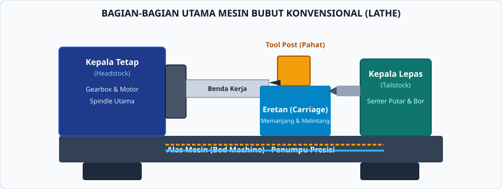
6 Komponen Utama Mesin Bubut
1. Kepala Tetap (Headstock), 2. Kepala Lepas (Tailstock), 3. Alas Mesin (Bed), 4. Eretan (Carriage), 5. Poros Pengarah, 6. Rumah Pahat (Toolpost).
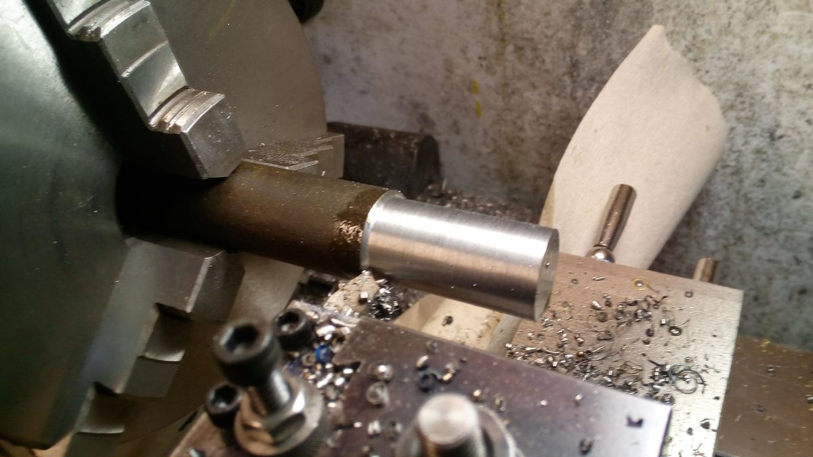
Cekam Tiga Rahang (3-Jaw Self-Centering)
Ketiga rahang bergerak memusat secara serentak untuk mencekam benda kerja silindris bundar konsentris.
Enam Macam Operasi Pembubutan Dasar di Bengkel SMK:
Bubut Muka (Facing)
Meratakan penampang ujung benda kerja tegak lurus sumbu putar untuk mendapatkan ukuran panjang presisi.
Bubut Rata Silindris (Turning)
Mengurangi diameter luar benda kerja secara memanjang sepanjang sumbu spindel.
Bubut Bertingkat (Stepped Turning)
Membuat variasi beberapa diameter poros berbeda untuk dudukan bantalan bearing dan roda gigi.
Bubut Alur & Potong (Grooving & Parting)
Membuat alur pasak/snap ring dan memotong benda kerja jadi menggunakan pahat potong tipis.
3.9 Simulator Parameter Bubut & Kalkulator Putaran Spindel (RPM)
Tahap Mengaplikasikan (Apply): Pilih material dan geser diameter benda kerja di bawah ini untuk menghitung kecepatan putaran spindel bubut yang aman dan efisien:
⚙️ Kalkulator Putaran Spindel Mesin Bubut (n)
Simulasi Interaktif3.10 Peralatan Angkat & Pemindah Bahan (Material Handling)
Tahap Memahami & Mengaplikasikan (Understand & Apply): Pengangkutan balok baja berat dan bahan coran di bengkel manufaktur wajib menggunakan peralatan angkat bersertifikasi:
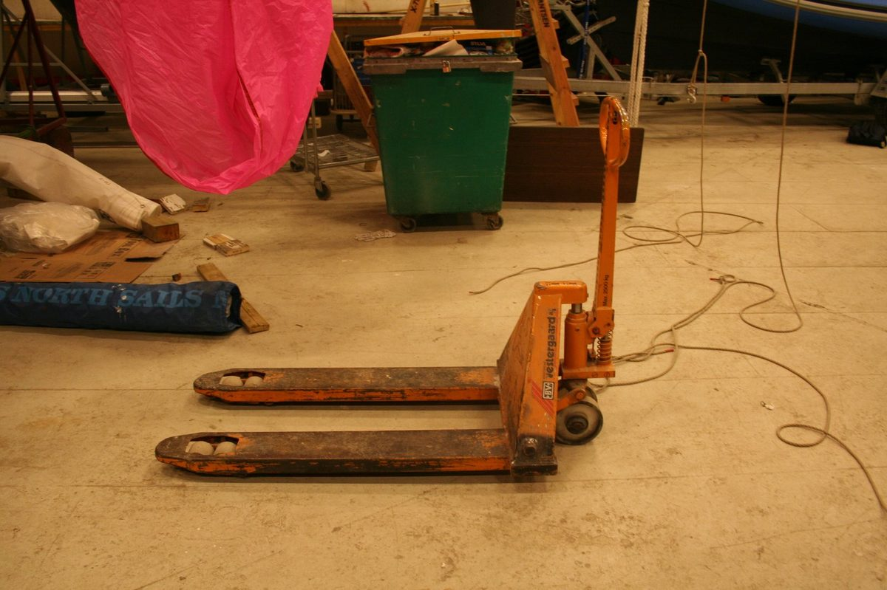
Forklift & Hand Pallet Hidrolik
Memindahkan palet bahan mentah baja batangan dan kotak suku cadang jadi hingga kapasitas 3 ton.
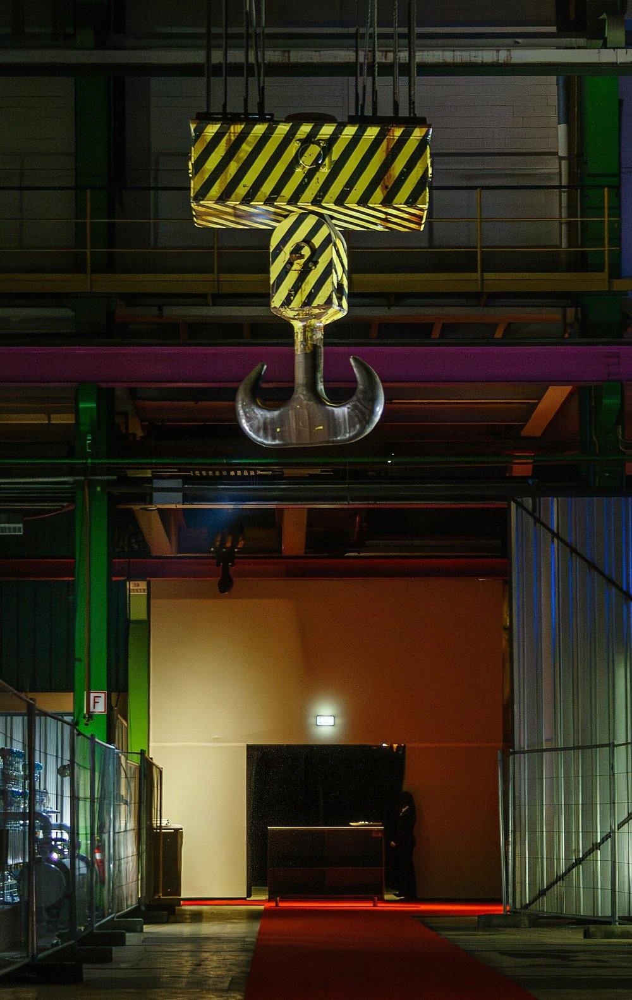
Derek Gantung (Overhead Crane)
Mengangkat benda kerja silindris berat untuk dipasang pada cekam mesin bubut besar menggunakan sling sabuk tekstil (webbing sling).
🎯 Evaluasi Deep Learning: Kuis Formatif Bab 3
Kuis Interaktif4.1 Peran Gambar Teknik sebagai Bahasa Universal & Peralatan CAD
Tahap Memahami (Understand): Gambar teknik adalah "bahasa universal orang teknik" yang menyampaikan gagasan rancang bangun secara akurat tanpa terhalang perbedaan bahasa tutur manusia:
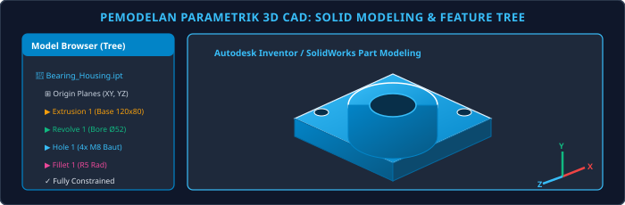
Perangkat Lunak CADD Modern
AutoCAD 2D, Autodesk Inventor, dan SolidWorks 3D parametrik menghasilkan gambar kerja terintegrasi mesin CNC.
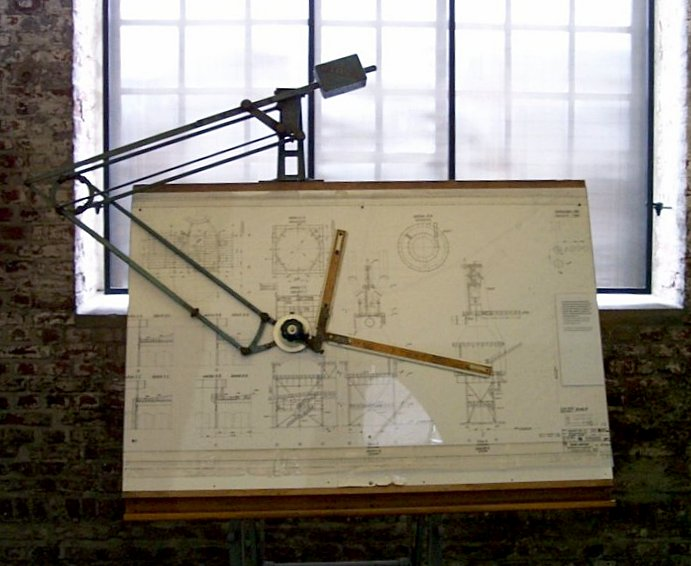
Peralatan Gambar Manual Klasik
Meja gambar hidrolik, sepasang penggaris segitiga 45° dan 30°/60°, pensil teknik 2H/HB, dan jangka orisinil.
Peran Krusial Gambar Teknik di Industri:
- Media Komunikasi Tunggal: Menghubungkan divisi perancang (engineering designer) dengan juru bubut di lantai bengkel tanpa salah tafsir.
- Penyimpan Informasi Geometris: Mencatat bentuk 3D, batas toleransi linier, kekasaran permukaan, jenis bahan, dan petunjuk perlakuan panas.
- Dasar Kendali Mutu (Quality Control): Dokumen hukum resmi pengesahan kepatuhan produk terhadap kontrak pemesanan pelanggan.
4.2 Standardisasi Kertas Gambar ISO Seri A & Kepala Gambar (Etiket ISO 7200)
Tahap Memahami & Mengaplikasikan (Understand & Apply): Standar internasional ISO 5457 dan ISO 7200 mengatur dimensi kertas serta identitas kepala gambar:
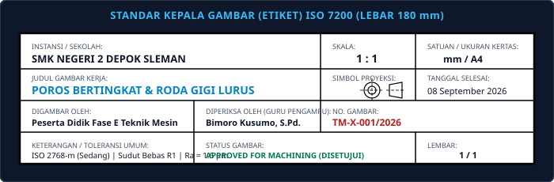
Kepala Gambar (Etiket ISO 7200)
Terletak di pojok kanan bawah: Judul gambar, instansi (SMK N 2 Depok), skala, proyeksi, pemeriksa, dan tanggal.
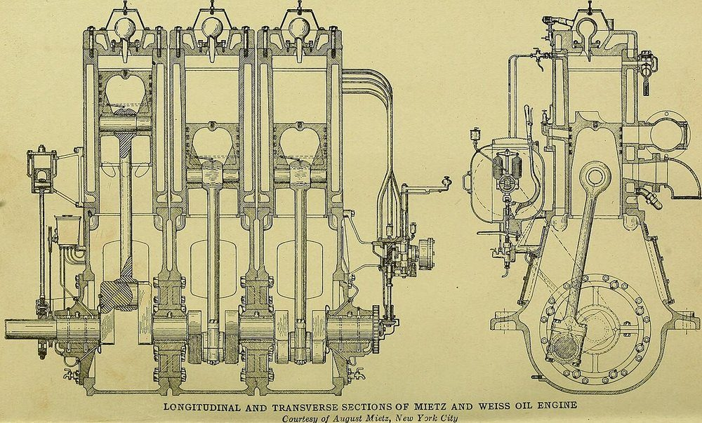
Format Kertas Seri A
A0 (1 m² luas) dibagi dua menghasilkan A1, A2, A3 (420×297 mm), dan A4 (297×210 mm) dengan rasio 1:√2.
Kaidah Garis Tepi & Kolom Etiket:
| Ukuran Kertas | Dimensi (mm) | Garis Tepi Kiri (Arsip) | Garis Tepi Atas, Kanan, Bawah |
|---|---|---|---|
| A4 | 210 × 297 | 20 mm (Wajib untuk lubang binder ordner) | 5 mm |
| A3 | 297 × 420 | 20 mm | 10 mm |
| A2, A1, A0 | 594×420 s.d. 841×1189 | 20 mm | 10 mm (A2) / 20 mm (A1/A0) |
4.3 Standardisasi Macam Garis ISO 128 & Sketsa Bebas (Freehand)
Tahap Memahami (Understand): Setiap jenis dan ketebalan garis pada gambar teknik memiliki arti simbolis tersendiri sesuai standar internasional ISO 128:
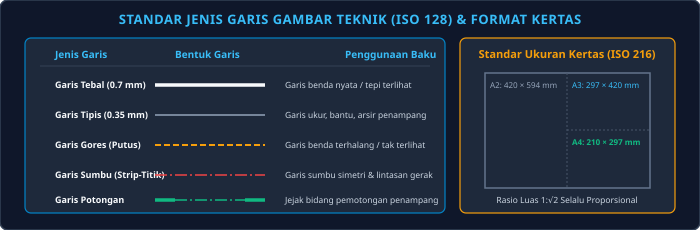
Klasifikasi Garis Gambar ISO
Garis tebal kontinu (0,5 mm), garis tipis kontinu (0,25 mm), garis putus-putus, dan garis strip-titik sumbu simetri.
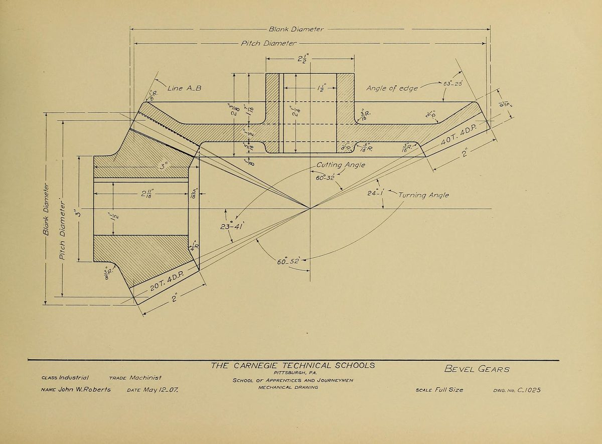
Sketsa Bebas Proporsional (Freehand)
Menggambar sketsa ide rancangan tanpa penggaris dengan proporsi ukuran mendekati skala nyata.
Hierarki 4 Garis Pokok dalam Gambar Mesin:
| Bentuk Garis | Tebal Acuan (Seri 0,5) | Fungsi Utama dalam Gambar Komponen |
|---|---|---|
| Garis Tebal Kontinu | 0,5 mm | Garis nyata benda kerja dan garis tepi batas bidang luar yang terlihat langsung. |
| Garis Tipis Kontinu | 0,25 mm | Garis ukur dimensi, garis bantu perpanjangan, garis arsir potongan penampang logam. |
| Garis Gores Putus-Putus | 0,35 mm | Garis tepi atau sudut benda yang terhalang di belakang (garis tak terlihat). |
| Garis Strip-Titik Tipis | 0,25 mm | Garis sumbu putar silinder, poros bubut, lingkaran jarak lubang baut, bidang simetri. |
4.4 Kaidah Baku Penunjukan Ukuran (Dimensioning Standar ISO)
Tahap Memahami & Mengaplikasikan (Understand & Apply): Kesalahan mencantumkan garis ukur dapat menyebabkan salah pengerjaan di bengkel bubut. Patuhi 6 kaidah emas penunjukan ukuran:
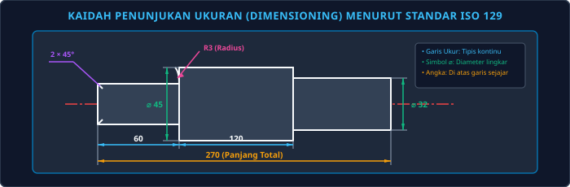
Elemen Penunjukan Ukuran
Garis ukur paralel, garis bantu dengan celah 1 mm dari benda, mata panah hitam 15° berasio 1:3, dan angka ukur di atas garis.
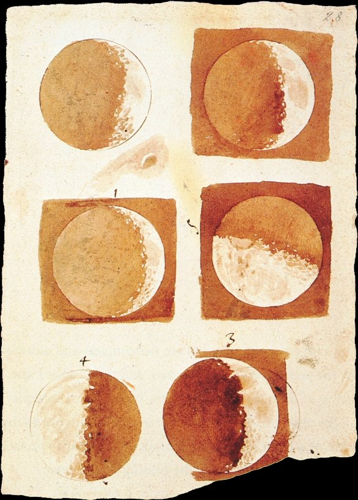
Simbol Huruf Dimensi ISO
Simbol Ø (Diameter lingkaran), R (Radius busur), SØ (Diameter bola), □ (Bujur sangkar bidang), dan sudut kemiringan tirus.
Kaidah Utama Penunjukan Ukuran Benda Mesin:
- Jangan Mengulang Ukuran (No Redundancy): Setiap elemen ukuran hanya boleh dicantumkan satu kali pada pandangan yang paling jelas memperlihatkan bentuknya.
- Ukuran Luar Benda: Garis ukur diletakkan di luar kontur gambar benda kerja; jangan menumpuk garis ukur di dalam arsir benda.
- Urutan Ukuran Paralel: Ukuran terkecil diletakkan paling dekat dengan benda (jarak minimal 10 mm), diikuti ukuran yang lebih besar di luarnya (jarak seragam 7 mm) agar garis ukur tidak saling memotong.
4.5 Teori Gambar Proyeksi Piktorial 3D (Isometri, Dimetri, Kavalir)
Tahap Memahami (Understand): Proyeksi piktorial menyajikan wujud visual 3 dimensi benda kerja dalam satu bidang gambar datar agar mudah dibayangkan oleh operator:
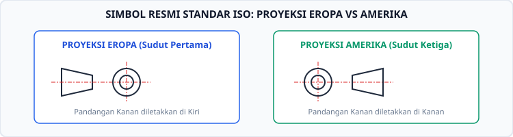
Tiga Metode Proyeksi 3D
Isometri (30°-30°), Dimetri (7°-40°), dan Kavalir/Miring (sudut sumbu 45° dengan perpendekan sumbu surut 1/2).

Sumbu Isometri Standar
Sumbu X dan Y miring 30° terhadap garis horizontal; sumbu Z tegak lurus vertikal. Rasio skala 1:1:1 tanpa perpendekan.
Karakteristik & Ketentuan Perpendekan Sumbu:
| Tipe Proyeksi | Sudut Sumbu X | Sudut Sumbu Y | Rasio Skala Panjang (X : Y : Z) |
|---|---|---|---|
| Isometri | 30° | 30° | 1 : 1 : 1 (Semua ukuran asli digambar penuh) |
| Dimetri | 7° | 40° | 1 : 1/2 : 1 (Sumbu Y diperpendek setengahnya) |
| Miring (Kavalir) | 0° (Horisontal) | 45° | 1 : 1/2 : 1 (Pandangan depan tampak normal tak berubah) |
4.6 Proyeksi Ortogonal: Perbandingan Kuadran I (Eropa) vs Kuadran III (Amerika)
Tahap Mengaplikasikan (Apply): Klik tombol di bawah ini untuk melihat perbandingan susunan pandangan dan lambang resmi kerucut terpancung:
📐 Simulator Penampil Proyeksi Ortogonal
Proyeksi Sudut Pertama (Proyeksi Eropa / First Angle)
Benda diletakkan di Kuadran I di antara pengamat dan bidang proyeksi. Bayangan menembus benda ke bidang belakangnya.
Karakteristik Tata Letak (Terbalik): Pandangan Kiri diletakkan di KANAN; Pandangan Atas diletakkan di BAWAH.
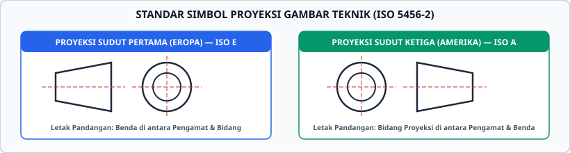
Simbol Resmi ISO Kerucut Terpancung
Eropa: Lingkaran di kanan kerucut. Amerika: Lingkaran di kiri kerucut.
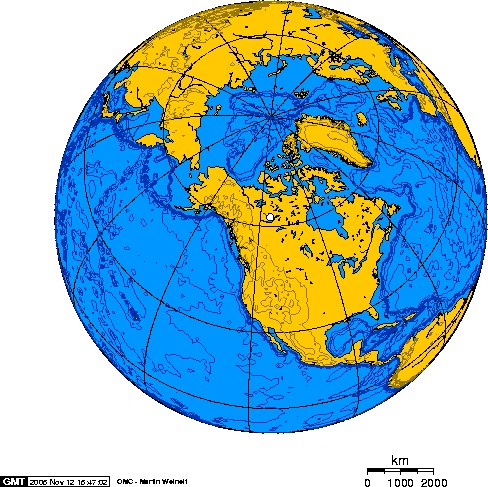
Pandangan Jamak (Multiview 2D)
Pandangan depan dipilih yang menampilkan wujud bentuk komponen paling informatif.
4.7 Membaca Gambar Kerja: Toleransi Linier, Sistem Suaian & Kekasaran Ra
Tahap Memahami & Mengaplikasikan (Understand & Apply): Komponen mesin tidak dapat dibuat dengan ukuran absolut nol deviasi. Sistem toleransi ISO memastikan keterpasangan rakitan (*interchangeability*):
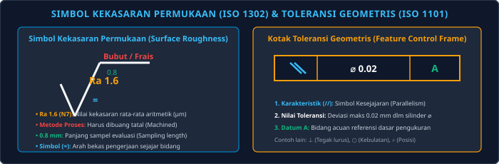
Suaian ISO Basis Lubang (H7/g6)
Suaian Longgar (Clearance Fit), Suaian Pas/Transisi (Transition Fit), dan Suaian Sesak/Paksa (Interference Fit).
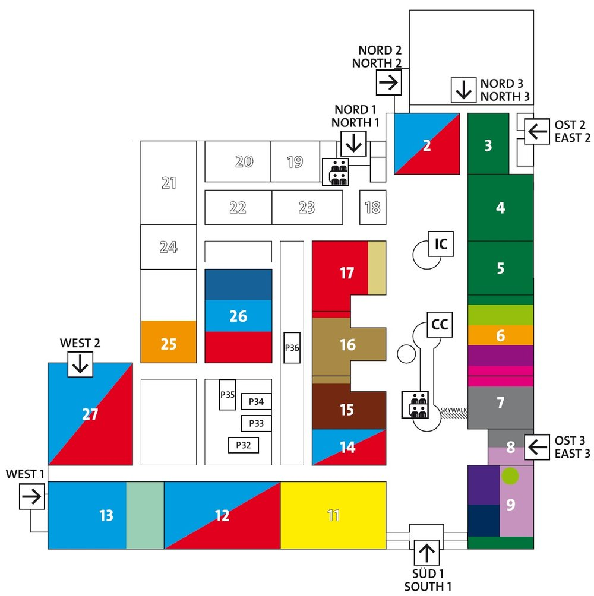
Simbol Kekasaran Permukaan (ISO 1302)
Nilai Ra dalam mikrometer (µm): N6 (Ra 0,8 µm bubut halus), N7 (Ra 1,6 µm bubut rata), N9 (Ra 6,3 µm kasar).
Cara Menginterpretasikan Kode Toleransi Suaian "Ø 30 H7/g6":
- Ø 30: Ukuran nominal dasar diameter poros dan lubang adalah 30 mm.
- H7 (Toleransi Lubang): Huruf kapital 'H' menunjukkan sistem basis lubang (garis penyimpangan bawah EI = 0, ES = +21 µm → rentang lubang Ø 30,000 s.d. 30,021 mm).
- g6 (Toleransi Poros): Huruf kecil 'g' menunjukkan poros longgar (es = -7 µm, ei = -20 µm → rentang poros Ø 29,980 s.d. 29,993 mm).
- Karakter Rakitan: Selalu ada celah bebas (clearance) 7 s.d. 41 mikron, memungkinkan poros berputar bebas dengan pelumasan oli lancar.
Rangkuman Pembelajaran Bab 4 (Refleksi Gambar Teknik)
- Gambar teknik adalah bahasa universal yang diatur secara presisi oleh standardisasi internasional ISO.
- Etiket ISO 7200 di sudut kanan bawah memuat seluruh metadata resmi validasi rancang bangun.
- Garis tebal kontinu untuk benda tampak nyata, garis putus-putus untuk bagian terhalang, dan garis strip-titik untuk sumbu putar.
- Proyeksi Isometri (30°-30°) menggambarkan benda 3D tanpa perpendekan ukuran skala (1:1:1).
- Proyeksi Eropa membalik letak pandangan, sedangkan Proyeksi Amerika menata pandangan sesuai arah hadap wajar pengamat.
- Sistem toleransi ISO H7/g6 menjamin kelonggaran mikro agar poros bubut dapat berputar mulus pada rumah bantalannya.
🎯 Evaluasi Deep Learning: Kuis Formatif Bab 4
Kuis Interaktif5.1 Klasifikasi Sambungan Mesin: Sambungan Tetap vs Tidak Tetap
Tahap Memahami (Understand): Struktur mesin tersusun atas ribuan elemen yang dirakit menggunakan dua kategori sambungan mekanik:
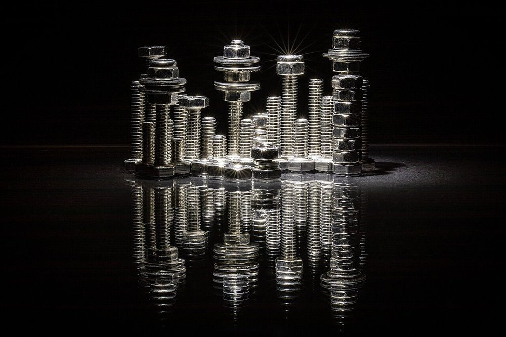
Sambungan Lepas (Demountable)
Baut-mur metris ISO, pasak (feather key) pengunci roda gigi ke poros, pin tirus, dan gelang pengunci (snap ring).
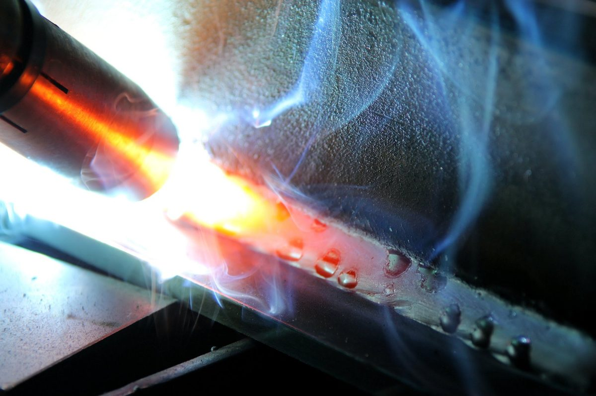
Sambungan Tetap (Permanent)
Sambungan las busur listrik (SMAW/MIG/TIG) dan sambungan paku keling (rivet) yang tidak dapat dilepas tanpa merusak komponen.
Kaidah Pemasangan Sambungan Baut-Mur Standar Metris ISO:
- Spesifikasi Ulir Metris (Contoh: M10 × 1,5): Huruf 'M' menunjukkan ulir segitiga metris dengan sudut puncak 60°, angka '10' adalah diameter luar puncak ulir 10 mm, dan '1,5' adalah kisar jarak antar-puncak ulir (pitch 1,5 mm).
- Penggunaan Ring Pegas (Spring Washer): Mencegah mur mengendur akibat getaran frekuensi tinggi motor mesin perkakas.
- Kunci Momen (Torque Wrench): Mengencangkan baut silinder dengan nilai torsi (Nm) seragam sesuai buku manual perakitan mesin.
5.2 Tumpuan Poros: Bantalan Luncur (Bushing) vs Bantalan Gelinding (Bearing)
Tahap Memahami (Understand): Bantalan (*bearing*) berfungsi menumpu poros yang berputar agar putaran stabil dengan koefisien gesek seminimal mungkin:
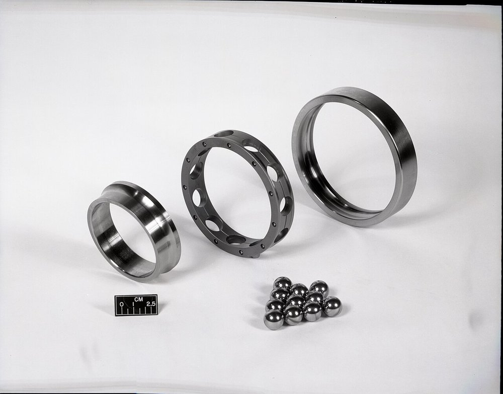
Bantalan Gelinding (Rolling Bearing)
Mengganti gesekan luncur dengan gesekan gelinding bola/rol baja di antara cincin dalam (inner ring) dan cincin luar (outer ring).
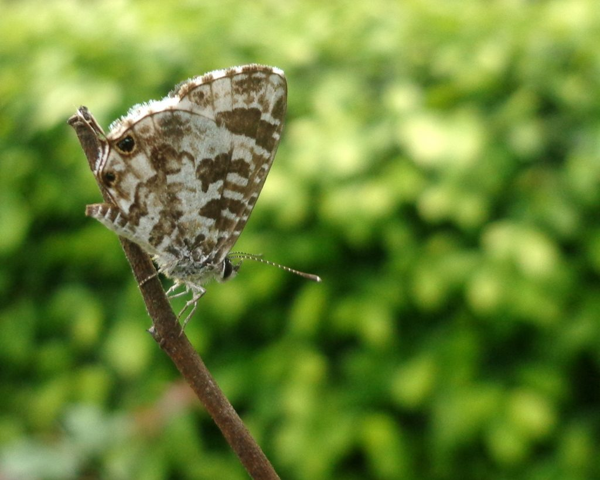
Bantalan Luncur (Bushing Bronze)
Selongsong perunggu fosfor tahan gesek hening untuk beban kejut besar pada kecepatan putar rendah hingga sedang.
Perbandingan Karakteristik Bushing vs Rolling Bearing:
| Aspek Evaluasi | Bantalan Luncur (Bushing Bronze) | Bantalan Gelinding (Ball/Roller Bearing) |
|---|---|---|
| Gesekan Awal (Start-Up Friction) | Tinggi (gesekan batas kontak langsung sebelum lapisan oli terbentuk). | Sangat rendah (kontak gelinding bola presisi). |
| Ketahanan Beban Kejut | Sangat tangguh (bidang kontak selongsong luas meredam hentakan). | Rentan pecah/cacat fatik bila menerima tumbukan titik ekstrem. |
| Tingkat Kebisingan | Sangat hening tanpa desingan logam. | Terdengar desingan bola menggelinding pada kecepatan tinggi. |
| Kebutuhan Pelumasan | Kritis wajib suplai oli hidro-dinamik kontinu. | Dapat menggunakan gemuk grease tertutup (sealed 2RS) tahan lama. |
5.3 Sistem Kode Standar Bantalan ISO & Simulator Dekoder Bearing
Tahap Mengaplikasikan (Apply): Klik tipe bantalan di bawah ini untuk membedah arti digit kode penomoran standar ISO secara visual dan interaktif:
🔍 ISO Rolling Bearing Decoder
InteraktifStandar ISO Bearing: 6205-2RS
Tipe Bantalan: Bantalan Bola Alur Dalam Baris Tunggal (Deep Groove Ball Bearing)
Seri Beban: 2 = Seri Beban Ringan (Light Duty Series)
Diameter Dalam Poros: 05 × 5 = Ø 25 mm Diameter Lubang Poros Dalam
Tutup / Perapat: 2RS = Dua Karet Sintetis Penutup (Rubber Seal) Tahan Debu & Cipratan Air
• 04 → 4 × 5 = Ø 20 mm | • 05 → 5 × 5 = Ø 25 mm | • 06 → 6 × 5 = Ø 30 mm | • 08 → 8 × 5 = Ø 40 mm.
5.4 Transmisi Daya Roda Gigi (Gear Train) & Rasio Kecepatan
Tahap Memahami & Mengaplikasikan (Understand & Apply): Transmisi roda gigi memindahkan putaran dan torsi tanpa selip dengan rasio putaran pasti:
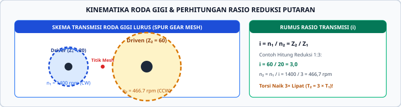
Kinematika Roda Gigi (Gear Ratio)
Roda gigi penggerak (pinion) memutar roda gigi yang digerakkan dengan arah putaran berlawanan.
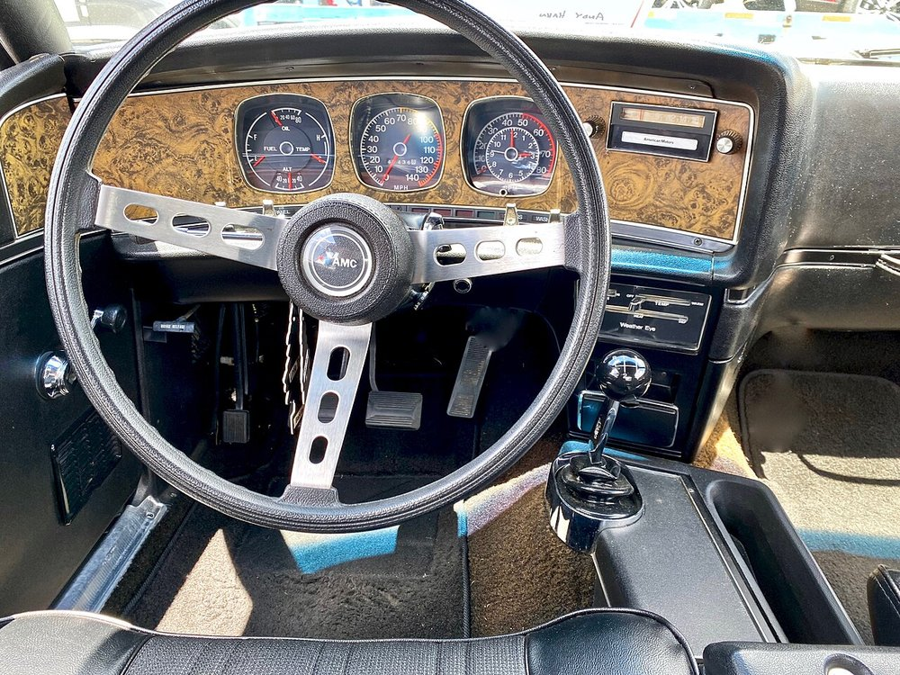
Kotak Roda Gigi Spindel (Gearbox)
Kombinasi roda gigi geser untuk mengatur variasi kecepatan spindel dan kisar pemotongan ulir bubut.
Kalkulasi Rasio Reduksi Roda Gigi (Gear Ratio):
i = n₁ / n₂ = z₂ / z₁
Di mana n₁ = RPM penggerak, n₂ = RPM yang digerakkan, z₁ = jumlah gigi penggerak, dan z₂ = jumlah gigi digerakkan.
Contoh: Pinion z₁ = 20 gigi berputar 1200 RPM memutar roda gigi z₂ = 60 gigi:
n₂ = n₁ × (z₁ / z₂) = 1200 × (20 / 60) = 1200 / 3 = 400 RPM (Torsi meningkat 3 kali lipat!).
5.5 Transmisi Fleksibel: Sabuk Puli (V-Belt & Timing Belt) serta Rantai Sproket
Tahap Memahami & Mengaplikasikan (Understand & Apply): Transmisi sabuk dan rantai digunakan untuk menghubungkan dua poros dengan jarak sumbu yang relatif jauh:
Klasifikasi Transmisi Fleksibel
Sabuk V (V-Belt trapesium), Sabuk Bergigi (Timing Belt sinkron), dan Rantai Rol (Roller Chain).
Transmisi Sabuk Puli Mesin Bor
Pengubahan tingkat kecepatan putaran spindel mesin bor bangku dengan memindahkan sabuk V antar-alur puli bertingkat.
Perbandingan Karakteristik Transmisi Fleksibel:
| Fitur Evaluasi | Sabuk V (V-Belt 40°) | Sabuk Bergigi (Timing Belt) | Rantai Rol (Roller Chain) |
|---|---|---|---|
| Sifat Selip | Ada selip mikro (berfungsi sebagai pengaman overload). | Bebas selip 100% (sinkronisasi poros nok mesin). | Bebas selip (transmisi positif bergigi baja). |
| Kebutuhan Pelumasan | Kering (pantang terkena oli/gemuk agar tidak selip). | Kering tanpa oli. | Wajib pelumasan oli/gemuk berkala pada rol rantai. |
| Tingkat Kebisingan | Sangat hening dan menyerap getaran kejut. | Hening pada kecepatan tinggi. | Cenderung bising pada kecepatan tinggi. |
5.6 Kopling Mesin (Coupling & Clutch) & Sistem Pemipaan Industri
Tahap Memahami (Understand): Kopling menghubungkan poros motor penggerak dengan poros mesin: Kopling Tetap (*Flexible Coupling*) menyerap misalignment, sedangkan Kopling Gesek (*Clutch*) dapat memutus/menyambung putaran saat mesin berjalan:
Kopling Fleksibel Rahang (Jaw Coupling)
Elemen karet peredam (spider insert) di antara rahang logam mengkompensasi ketidaksejajaran sumbu poros.
Katup Saluran Fluida (Valves)
Katup bola (ball valve), katup sorong (gate valve), dan katup satu arah (check valve) pada sistem pendingin coolant mesin.
🎯 Evaluasi Deep Learning: Kuis Formatif Bab 5
Kuis Interaktif6.1 Perkembangan Revolusi Industri Manufaktur & Pemesinan CNC Modern
Tahap Memahami (Understand): Dunia manufaktur bertransformasi dari mesin bertenaga uap mekanik (Industri 1.0) hingga integrasi sistem siber-fisik dan kecerdasan buatan (Industri 4.0 & Society 5.0):
Evolusi Industri 1.0 hingga 4.0
1.0 Tenaga Uap, 2.0 Lini Perakitan Massal, 3.0 Otomasi Elektronika & PLC, 4.0 Smart Factory Cyber-Physical.
Mesin Bubut & Frais CNC Multi-Axis
Pemesinan presisi terkomputerisasi dengan kecepatan spindel hingga 12.000 RPM dan akurasi mikron (0,001 mm).
Karakteristik Unggul Mesin Bubut CNC Dibanding Konvensional:
- Konsistensi Dimensi Massal: Memproduksi ribuan poros dengan profil radius dan ulir kompleks yang identik sempurna sesuai kode program G-Code / M-Code.
- Kecepatan Produksi Tinggi: Dilengkapi penukar pahat otomatis (Automatic Tool Changer / ATC) yang mengganti pahat hanya dalam 1–2 detik.
- Simulasi Layar Grafis (Dry Run): Gerakan pahat diverifikasi terlebih dahulu pada monitor sebelum pemotongan nyata untuk mencegah tabrakan (machine crash).
6.2 Internet of Things (IoT) & Digitalisasi Pabrik Manufaktur Cerdas
Tahap Memahami (Understand): Pabrik cerdas (*Smart Factory*) menghubungkan mesin perkakas, robot pemindah bahan, dan sensor ke jaringan awan (cloud) secara nirkabel:
Arsitektur IoT 5 Lapis Pabrik
1. Lapisan Sensor & Aktuator, 2. Edge Gateway, 3. Jaringan Komunikasi, 4. Cloud Analytics, 5. Dashboard Pengguna.
Pemantauan Efisiensi Mesin (OEE)
Nilai Overall Equipment Effectiveness (OEE) dihitung otomatis secara real-time dari konsumsi daya dan kecepatan putar spindel.
Tiga Manfaat Implementasi IoT di Bengkel Manufaktur:
Pemantauan Kondisi Waktu Nyata
Sensor getaran aksial pada bantalan spindel bubut mengirimkan data telemetry setiap detik ke smartphone kepala bengkel.
Pelacakan Alur Kerja Benda Kerja
Penggunaan tag RFID pada palet job sheet memungkinkan pelacakan tahapan pembubutan, pemfraisan, hingga inspeksi QC secara transparan.
Efisiensi Konsumsi Energi Listrik
Sistem otomatis mematikan motor hidrolik dan lampu bilik kerja saat mesin berada dalam kondisi siaga (idle mode) lebih dari 10 menit.
6.3 Perawatan Mesin Berbantuan AI (Predictive Maintenance & Computer Vision)
Tahap Memahami (Understand): Kecerdasan Buatan (Artificial Intelligence) mengubah paradigma perawatan dari sekadar menunggu mesin rusak (*reactive*) menjadi pencegahan cerdas sebelum kerusakan terjadi:
Analisis Spektrum Getaran Spindel AI
Algoritma Machine Learning mendeteksi keausan dini cincin bantalan bearing berminggu-minggu sebelum terjadi macet total.
Inspeksi Visual Otomatis (Computer Vision)
Kamera berkecepatan tinggi dengan kecerdasan AI memindai cacat goresan mikro dan keausan bibir pahat potong secara otomatis.
Perbandingan Tiga Paradigma Pemeliharaan Mesin Perkakas:
| Strategi Perawatan | Waktu Tindakan Servis | Dampak Biaya & Waktu Mati (Downtime) |
|---|---|---|
| Perawatan Reaktif (Breakdown) | Setelah mesin rusak dan berhenti mendadak di tengah produksi. | Biaya perbaikan sangat mahal, waktu henti produksi lama, merusak benda kerja. |
| Perawatan Preventif (Jadwal) | Berdasarkan interval kalender tetap (misal ganti oli tiap 3 bulan). | Bagus, namun sering mengganti komponen yang sebenarnya masih layak pakai. |
| Perawatan Prediktif Berbantuan AI | Tepat saat data sensor menunjukkan deviasi degradasi fungsi kritis. | Sangat efisien: Nol waktu henti tak terduga, menghemat 40% biaya suku cadang! |
6.4 Wawasan Hijau (Green Manufacturing) & Teknologi MQL Bengkel
Tahap Merefleksi (Reflect): Pendidikan vokasi modern menanamkan *Green Skills* untuk menciptakan teknisi yang bertanggung jawab terhadap kelestarian lingkungan hidup dan efisiensi sumber daya alam:
Daur Ulang Tatal Logam (Swarf Recycling)
Tatal baja dan aluminium dipres menjadi briket padat untuk dilebur kembali di tungku induksi pengecoran.
Minimum Quantity Lubrication (MQL)
Menyemprotkan kabut mikro aerosol minyak nabati (10–50 ml/jam) menggantikan banjir cairan coolant kimia beracun.
Manajemen Enam Kategori Limbah Bengkel Pemesinan:
Limbah B3 Cairan Pendingin (Coolant)
Oli emulsi bekas wajib disaring pemisah minyak (oil skimmer) dan diolah instalasi IPAL khusus sebelum dibuang.
Debu Gerinda & Serpihan Batu Asah
Ditampung dalam cyclone dust collector tertutup agar partikel silika tidak terhirup ke paru-paru operator.
Kain Majun & Sarung Tangan Tercemar Oli
Ditempatkan dalam drum logam berpenutup kedap api berlabel Limbah B3 Padat untuk dimusnahkan secara berlisensi.
Efisiensi Konsumsi Listrik & Standar ISO 14001
Penggunaan inverter hemat daya dan peredaman kebisingan mesin perkakas di bawah ambang batas baku mutu 85 dB.
6.5 Jenjang Karir Profesi Teknisi Mesin & Technopreneurship Bengkel Bubut
Tahap Merefleksi (Reflect): Lulusan SMK Teknik Pemesinan memiliki peluang karir industri yang sangat luas serta potensi besar merintis wirausaha rekayasa (*technopreneur*):
Level 1: Operator Mesin Perkakas Konvensional (Bubut & Frais)
Membaca gambar kerja kerja bangku, membubut poros bertingkat toleransi 0,05 mm, dan membuat ulir.
Level 2: Teknisi Mesin CNC & CAD/CAM Programmer
Memprogram G-Code, setting titik nol mesin CNC, memilih insert karbida, dan optimasi pemakanan.
Level 3: Pembuat Perkakas Presisi (Toolmaker & Die Maker)
Membuat cetakan injeksi plastik (mould) dan cetakan tekan pelat logam (stamping dies) berakurasi mikron.
Level 4: Technopreneur Bengkel Bubut & Fabrikasi Mandiri
Mendirikan bengkel rekayasa suku cadang mesin pertanian, perbaikan poros kapal, dan komponen kustom.
Rangkuman Pembelajaran Bab 6 (Deep Reflection)
- Revolusi industri bertransisi ke era manufaktur cerdas yang memadukan mesin CNC multi-axis dengan kecerdasan buatan.
- Internet of Things (IoT) menghubungkan sensor getaran dan temperatur mesin ke sistem cloud untuk pemantauan OEE real-time.
- AI Predictive Maintenance memangkas biaya perbaikan hingga 40% dengan mendeteksi anomali getaran sebelum bantalan rusak.
- Wawasan hijau (Green Manufacturing) mewajibkan daur ulang tatal beram logam dan pemanfaatan teknologi kabut mikro MQL ramah lingkungan.
- Jenjang kompetensi BNSP dan jiwa technopreneurship membekali lulusan SMK N 2 Depok Sleman untuk menjadi juragan bengkel bubut mandiri berdaya saing tinggi.
🎯 Evaluasi Deep Learning: Kuis Formatif Bab 6
Kuis InteraktifSertifikat Digital Penyelesaian Modul Teknik Pemesinan
Tahap Merefleksi (Reflect): Selamat atas ketekunan Anda menuntaskan pembelajaran seluruh 6 Elemen Dasar-Dasar Keahlian Teknik Pemesinan Fase E berbasis Pendekatan Deep Learning. Terbitkan sertifikat digital resmi Anda di bawah ini:
SMK NEGERI 2 DEPOK SLEMAN
SERTIFIKAT KELULUSAN PEMBELAJARAN DEEP LEARNING
Telah berhasil menyelesaikan seluruh rangkaian siklus pembelajaran mandiri (Mindful, Meaningful, & Joyful Learning), simulasi virtual laboratorium, serta evaluasi formatif dalam modul ajar digital:
Dasar-Dasar Keahlian Teknik Pemesinan (TP) • Fase E SMK
Glosarium Komprehensif Teknik Pemesinan (A - Z)
| Istilah Teknis | Definisi Baku Standar Internasional |
|---|---|
| Anodizing | Proses perlakuan permukaan elektrolitik untuk mempertebal lapisan oksida pelindung alami pada paduan aluminium. |
| Bushing | Bantalan luncur berbentuk selongsong (umumnya berbahan perunggu) untuk menumpu poros pada beban kejut tinggi. |
| Center Drill | Mata bor kombinasi bersudut 60° untuk membuat lubang panduan awal dan lubang tumpuan senter putar kepala lepas. |
| Chuck 3-Jaw | Cekam bubut dengan tiga rahang yang bergerak memusat serentak secara konsentris (self-centering). |
| Cutting Speed (Cs) | Panjang tatal logam yang terpotong oleh mata pahat dalam satuan meter per menit (m/menit). |
| Dial Indicator | Jam ukur presisi dengan kecermatan 0,01 mm untuk mendeteksi keolengan poros dan kerataan bidang geser. |
| Hole Basis (H7) | Sistem toleransi ISO di mana ukuran lubang dibuat tetap dengan batas penyimpangan bawah persis 0 (garis nol). |
| MQL | Minimum Quantity Lubrication: teknik pelumasan pemesinan ramah lingkungan menggunakan kabut mikro aerosol nabati. |
| Predictive Maintenance | Perawatan mesin berbasis data sensor IoT dan algoritma AI untuk memprediksi kerusakan komponen sebelum terjadi kegagalan. |
| Ratchet Stop | Mekanisme roda gigi gelincir pada mikrometer luar untuk memastikan tekanan jepit pengukuran selalu konstan seragam. |
| Worm Gear | Transmisi roda gigi cacing untuk reduksi putaran besar pada sudut 90° tegak lurus dengan karakteristik mengunci sendiri. |
Daftar Pustaka & Standar Rujukan Industri:
- International Organization for Standardization. (2020). ISO 128: Technical product documentation - General principles of presentation. Geneva: ISO.
- ISO. (2018). ISO 286: Geometrical product specifications (GPS) - ISO code system for tolerances on linear sizes. Geneva: ISO.
- ISO. (2018). ISO 45001: Occupational health and safety management systems. Geneva: ISO.
- Kemendikbudristek RI. (2023). Dasar-Dasar Keahlian Teknik Mesin - Fase E SMK. Jakarta: Pusat Perbukuan.
- Gerling, H. (1982). All About Machine Tools. New Delhi: Wiley Eastern Ltd.
Hak Cipta © 2026 SMK Negeri 2 Depok Sleman, D.I. Yogyakarta.
Dikembangkan dengan Dedikasi untuk Memajukan Pendidikan Vokasi Teknik Pemesinan Indonesia.